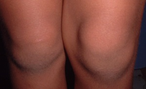
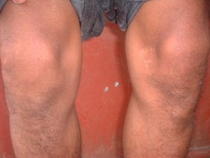

buel  
/buʔɔl/
n.
“knee”
n.
a knee
Wrd.Gloss: knee
Ka seini ne lalag iyan sika se igluud ta wey igpanimbuel ta ke eg-ampu ki diyè te Manama.
Eg-unduk a wey egpanimbuel a wey igtahù ku ka keddì ne suman-suman diyè te Magbebayè ta.
I bow down my knees and put my pressence to our God.
Eng. knee
Tag. túhod
Ceb. túhod
Ilo.: túmeng
Tigwanon: buʔel
Binukid: buʔel
WBM: buʔel
Ilianen: buʔel
Sarangani: boʔel
Cagayano: buʔuł
Tagbawa: abull
Obo: buʔe
Proto: buʔel
OCM: Ethnoanatomy (826)
DDP: Leg (2.1.3.2), Bone, joint (2.1.6)
Online dict status: -
Usage level: F
v.
for someone (egpanimbuel, migpanimbuel/impanimbuel, panimbuel, agent, eg><ø-paniN-) to kneel at someone else (egpanimbuelan, impanimbuelan/migpanimbuelan/pigpanimbuelan, panimbueli, location, eg><an-paN-)
Kenè ka egpanimbuel diyè te tangkaan te minsan hentew, su diyè ke rè te Manama.
Don't kneel before anyone but rather before God.
Eng. kneel
DDP: Leg (2.1.3.2)
Online dict status: -
Usage level: M
Updated by: RJH,TME,QDL,QDL,RAA,NJK,QDL,RJH
Last updated: 10/Dec/2010
"migpanimbuel" in song "Seini a kuntee"
This page last updated: 19/May/2012
Copyright © 2009-2010, Matigsalug Language Christian Association, Inc